摘要：MetaData Lock即元数据锁，在数据库中元数据即数据字典信息包括db,table,function,procedure,trigger,event等。metadata lock主要为了保证元数据的一致性,用于处理不同线程操作同一数据对象的同步与互斥问题。
今天有客户(MySQL 5.6)遇到该问题，最关键的是属于第三种情况，google上根本找不到类似的故障案例，唯一一个非常接近的故障案例中数据库版本却不同（具体看下文慢慢聊），哎，困难重重啊，最终还是解决了哈。
alter table的语句是很危险的，在操作之前最好确认对要操作的表没有任何进行中的操作、没有未提交事务、也没有显式事务中的报错语句。如果有alter table的维护任务，在无人监管的时候运行，最好通过lock_wait_timeout设置好超时时间，避免长时间的metedata锁等待。
什么是metadata lock？ MetaData Lock即元数据锁，在数据库中元数据即数据字典信息包括db,table,function,procedure,trigger,event等。metadata lock主要为了保证元数据的一致性,用于处理不同线程操作同一数据对象的同步与互斥问题。
MetaData Lock的前世今生 MDL锁是为了解决一个有名的bug#989 ，所以在5.5.3版本引入了MDL锁。其实5.5也有类似保护元数据的机制，只是没有明确提出MDL概念而已。但是5.5之前版本(比如5.1)与5.5之后版本在保护元数据这块有一个显著的不同点是，5.1对于元数据的保护是语句级别的，5.5对于metadata的保护是事务级别的。所谓语句级别，即语句执行完成后，无论事务是否提交或回滚，其表结构可以被其他会话更新；而事务级别则是在事务结束后才释放MDL。引入MDL锁主要是为了解决两个问题 ：
事务隔离问题：比如在可重复隔离级别下，会话A在2次查询期间，会话B对表结构做了修改，两次查询结果就会不一致，无法满足可重复读的要求。
数据复制问题：比如会话A执行了多条更新语句期间，另外一个会话B做了表结构变更并且先提交，就会导致slave在重做时，先重做alter，再重做update时就会出现复制错误的现象。也就是上面提到的bug#989 。
DDL操作与MetaData Lock
metadata lock 机制是为了保证数据一致性存在的，在有事务的操作时候，需要首先获得metadata lock ,然后操作，如果这个时候，又来了一个事务也要ddl操作同一个表，就会出现 metadata lock。
自动提交模式下，单语句就是一个事务，执行完了，事务也就结束了。
preparestatement 会获得 metalock，一旦prepare 完毕， metalock 就释放了。
online DDL应该是指在alter table进行的时候， 插入/修改/删除数据的sql语句不会Waiting for table metadata lock。一旦alter table TableA的操作停滞在Waiting for table metadata lock的状态，后续对TableA的任何操作（包括读）都无法进行，也会在Opening tables的阶段进入Waiting for table metadata lock的队列。
Alter table 会发生锁的三种场景 场景1
会话A对booboo表执行读操作select *,sleep(60) from booboo;，正在进行未提交事务
会话B对booboo表执行在线DDL操作alter table booboo add q4 int default 0;
会话C对booboo表执行隐式读操作select *,sleep(60) from booboo;,进行等待
会话D对booboo表执行显示读操作begin;select * from booboo;也会进行等待
通过show processlist可以看到会话A（对booboo表上正在进行的操作），此时会话B（alter table语句）无法获取到metadata 独占锁，会进行等待，会话C和会话D都会进行等待，且能从processlist表中看到对booboo表的操作
会话A提交事务后或kill之后，会话C事务结束，会话Dselect语句执行成功，事务提交则会话B可执行，否则进入场景2
mysql> show processlist; +----+------+-----------+-----------+---------+------+---------------------------------+-----------------------------------------+ | Id | User | Host | db | Command | Time | State | Info | +----+------+-----------+-----------+---------+------+---------------------------------+-----------------------------------------+ | 6 | root | localhost | uplooking | Query | 167 | Waiting for table metadata lock | alter table booboo add q4 int default 0 | | 7 | root | localhost | uplooking | Query | 155 | Waiting for table metadata lock | select * from booboo | | 8 | root | localhost | uplooking | Query | 0 | starting | show processlist | | 9 | root | localhost | uplooking | Query | 181 | User sleep | select *,sleep(60) from booboo | | 10 | root | localhost | uplooking | Query | 7 | Waiting for table metadata lock | select * from booboo | +----+------+-----------+-----------+---------+------+---------------------------------+-----------------------------------------+ 5 rows in set (0.00 sec) # id =9的线程为会话A 虽然是隐式事务，但是没有执行成功，所以为未提交的事务# id =6的线程为会话B 在会话A有事务未提交的情况下，执行Alter操作,争抢metadata lock# id =7的线程为会话C 隐式查询事务也会进入等待# id =10的线程为会话D 显示查询事务同样进入等待
解决方法
# 查看metadatalock # # 查询 information_schema.innodb_trx 看到有长时间未完成的事务， 使用 kill 命令终止该查询。 select concat('kill ',i.trx_mysql_thread_id,';') from information_schema.innodb_trx i, (select id, time from information_schema.processlist where time = (select max(time) from information_schema.processlist where state = 'Waiting for table metadata lock' and substring(info, 1, 5) in ('alter' , 'optim', 'repai', 'lock ', 'drop ', 'creat'))) p where timestampdiff(second, i.trx_started, now()) > p.time and i.trx_mysql_thread_id not in (connection_id(),p.id);
场景2
通过show processlist看不到booboo上有任何操作，但实际上存在有未提交的事务，可以在information_schema.innodb_trx中查看到。在事务没有完成之前，booboo的锁不会释放，alter table同样获取不到metadata的独占锁
会话D提交事务或回滚或kill，则会话B中的Alter可继续执行
# 在场景1的基础上，将会话A的事务完成或者kill 掉，会话C执行成功，但是会话B和会话D继续进入metadata锁的等待。原因是会话D虽然select 可以执行，但是事务没有提交，则表上的metadata锁还存在，导致会话B的ddl操作无法执行。 # 会话B和会话D，情况1：知道有未完成的事务D，则结束会话D的事务，会话B正常执行。 # 会话B和会话D，情况2：不知道有未结束的事务D，如何排错呢？ ================================= -- 请根据具体的情景修改查询语句 -- 如果导致阻塞的语句的用户与当前用户不同，请使用导致阻塞的语句的用户登录来终止会话 # select id,State,command from information_schema.processlist where State="Waiting for table metadata lock"; select timediff(sysdate(),trx_started) timediff,sysdate(),trx_started,id,USER,DB,COMMAND,STATE,trx_state,trx_query from information_schema.processlist,information_schema.innodb_trx where trx_mysql_thread_id=id; show processlist; select concat('kill ',trx_mysql_thread_id,';') from information_schema.processlist,information_schema.innodb_trx where trx_mysql_thread_id=id and State!="Waiting for table metadata lock"; =============================== mysql> show processlist; +----+------+-----------+-----------+---------+------+---------------------------------+-----------------------------------------+ | Id | User | Host | db | Command | Time | State | Info | +----+------+-----------+-----------+---------+------+---------------------------------+-----------------------------------------+ | 6 | root | localhost | uplooking | Query | 275 | Waiting for table metadata lock | alter table booboo add q6 int default 0 | | 7 | root | localhost | uplooking | Sleep | 269 | | NULL | | 8 | root | localhost | uplooking | Query | 0 | starting | show processlist | | 10 | root | localhost | uplooking | Sleep | 249 | | NULL | | 12 | root | localhost | uplooking | Sleep | 191 | | NULL | +----+------+-----------+-----------+---------+------+---------------------------------+-----------------------------------------+ 5 rows in set (0.00 sec) # 查看当前进程发现除了Alter之外没有对booboo表的操作 mysql> select timediff(sysdate(),trx_started) timediff,sysdate(),trx_started,id ,USER,DB,COMMAND,STATE,trx_state,trx_query from information_schema.processlist,information_schema.innodb_trx where trx_mysql_thread_id=id ;+----------+---------------------+---------------------+----+------+-----------+---------+---------------------------------+-----------+-----------------------------------------+ | timediff | sysdate() | trx_started | id | USER | DB | COMMAND | STATE | trx_state | trx_query | +----------+---------------------+---------------------+----+------+-----------+---------+---------------------------------+-----------+-----------------------------------------+ | 00:05:38 | 2017-08-18 20:21:07 | 2017-08-18 20:15:29 | 6 | root | uplooking | Query | Waiting for table metadata lock | RUNNING | alter table booboo add q6 int default 0 | | 00:05:38 | 2017-08-18 20:21:07 | 2017-08-18 20:15:29 | 10 | root | uplooking | Sleep | | RUNNING | NULL | +----------+---------------------+---------------------+----+------+-----------+---------+---------------------------------+-----------+-----------------------------------------+ 2 rows in set (0.00 sec) # 查看innodb_trx表可以看到除了alter之外有未完成的事务，但是看不到具体query，得到线程id 为10 # 就可以kill 10来结束事务 # 之后Alter正常操作
场景3
与场景2对比的现象不同于：
场景2：未完成事务中存在未完成事务
场景3：未完成事务中不存在未完成事务：确认有错误事务未提交或回滚，找到该事务的session_id然后杀死
通过show processlist看不到booboo表有任何操作，在information_schema.innodb_trx中也没有任何进行中的事务。
这很可能是因为在一个显式的事务中，对booboo表进行了一个失败的操作（比如查询了一个不存在的字段），这时事务没有开始，但是失败语句获取到的锁依然有效。从performance_schema.events_statements_current表中可以查到失败的语句
也就是说除了语法错误，其他错误语句获取到的锁在这个事务提交或回滚之前，仍然不会释放掉。because the failed statement is written to the binary log and the locks protect log consistency 但是解释这一行为的原因很难理解，因为错误的语句根本不会被记录到二进制日志
解决方法：确认有错误事务未提交或回滚，找到该事务的sessionid然后杀死（难点）
# 场景3的出现和前两种不同 # 查看线程情况，看到alter操作metadata锁，还有其他的select 操作有metadata锁 # # # # 通过搜索资料定位到是场景3，但资料中没有说怎么解决问题，又不能重新启动服务器，只有一个资料里提到了方法（确认有错误事务未提交或回滚，找到该事务的sessionid然后杀死，关键就是如何找到sessionid呢？performance_schema.events_statements_current中的thread_id为线程id 并不是sessionid或者说会话id 、连接id ，如何通过thread_id找到session_id成为了难点？5.7中有个session表可以直接查到，而5.6中必须通过三表才能查到，分别为performance_schema.events_statements_current,performance_schema.threads,information_schema.processlist表。） ===================================================================================== # kill 掉除了写操作以外的queryselect concat('kill ',id) from information_schema.processlist where State="Waiting for table metadata lock" and substring(info, 1, 5) not in ('alter' , 'optim', 'repai', 'lock ', 'drop ', 'creat'); # 寻找未提交或未回滚的错误事务，并kill 即可 select t.processlist_id,t.processlist_time,e.sql_text from performance_schema.threads t,performance_schema.events_statements_current e where t.thread_id=e.thread_id and e.SQL_TEXT like '%t1%'; # 案例中假设是在t1表上有MDL锁，则，e.sql_text 近似匹配t1 # 本方法5.5 5.6 5.7 都通用。 =============================================================================
第一步：模拟第三种情况，会话11执行一个显示事务，且query出现列错误，t1表中不存在xx列，不提交。
第二步：会话14中执行alter操作
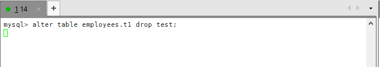
第三步：执行一条query
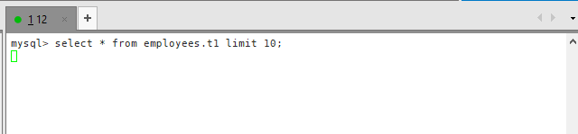
第四步：会话15执行一个显示事务，查询t1表
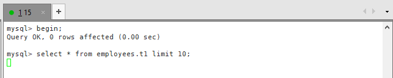
第五步：查看当前的processlist情况，可以看到只要是对t1表的操作都出现了MDL锁等待；尝试通过第一种情况的解决方法找出阻塞的事务会话进行kill，发现不存在阻塞会话；查看当前未提交的事务发现返回空；通过过滤processlist中进行MDL锁等待且不是alter的会话id，进行kill。
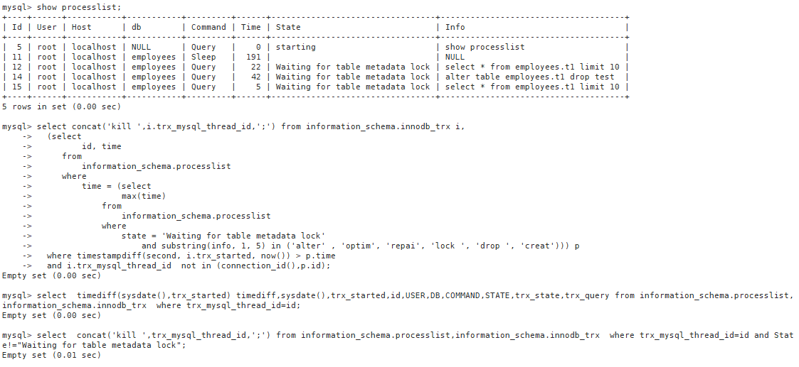
第六步：只kill 12，15，留下执行alter的会话14；有人会想为什么都kill掉呢？因为即使现在kill掉了，t1表的MDL锁也不会释放掉，还不如留下会话14的ddl操作，等彻底解决了，自然就能执行这个操作。具体可以看下面的分析。
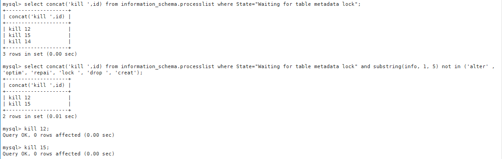
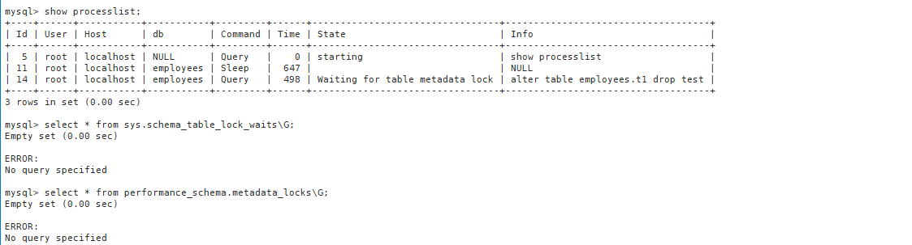
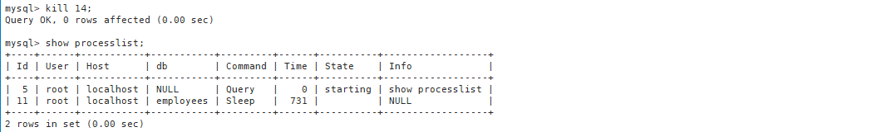
第七步：给大家做个测试，即使将会话14的alter动作kill掉：
processlist中看不到任何等待MDL锁的会话；
sys.schema_table_lock_waits中也不存在表锁（5.7才有sys库）；
performance_schema.metadata_locks中也不存在任何锁记录；
会话16想再去执行alter操作，又开始了MDL锁等待。
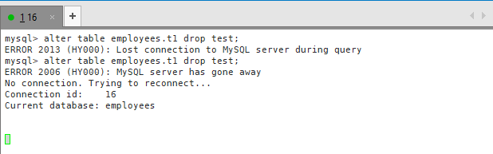
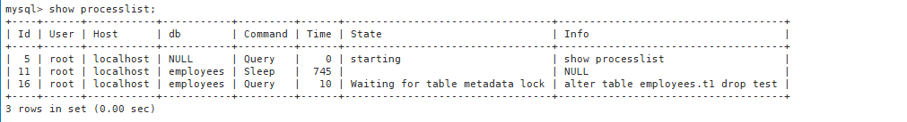
第八步：此时就一定可以确定当前属于【有错误事务未提交或回滚导致的MDL锁 】的情况了。我们找出这个错误事务，进行kill
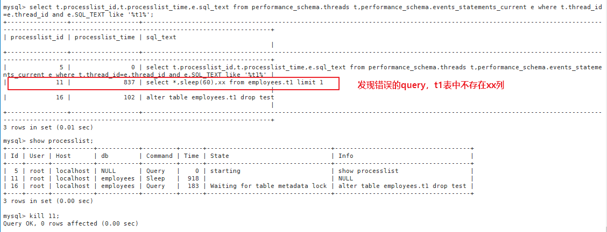
第九步：kill掉会话11后，成功将MDL锁释放。
有人又会问咯：为什么不将数据库重启？
回答：
如果说——
业务允许重启
不想找到问题的根源
那么重启吧
如果说——
数据库上面多个库，关联多个业务，不能重启
想找到问题的根源，防止下次再次出现类似的问题
那么你懂的
那么为什么不直接kill所有会话呢？同样如果你要找出问题的根源那么就排查，不想问为什么就直接kill吧，末尾有kill的脚本
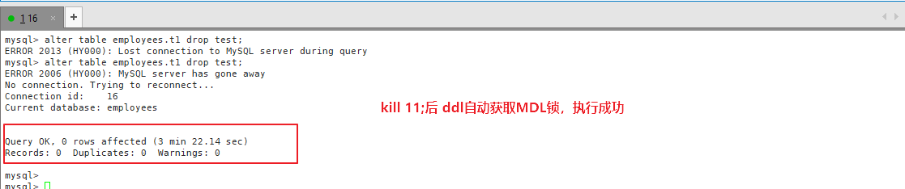
一步步分析如下：
mysql> show processlist; +----+------+-----------+-----------+---------+------+---------------------------------+-----------------------------------------+ | Id | User | Host | db | Command | Time | State | Info | +----+------+-----------+-----------+---------+------+---------------------------------+-----------------------------------------+ | 6 | root | localhost | uplooking | Query | 17 | Waiting for table metadata lock | alter table booboo add q9 int default 0 | | 7 | root | localhost | uplooking | Query | 11 | Waiting for table metadata lock | select * from booboo | | 8 | root | localhost | uplooking | Query | 0 | starting | show processlist | | 14 | root | localhost | uplooking | Query | 5 | Waiting for table metadata lock | select * from booboo where id=3 | | 15 | root | localhost | uplooking | Sleep | 28 | | NULL | +----+------+-----------+-----------+---------+------+---------------------------------+-----------------------------------------+ 5 rows in set (0.00 sec) mysql> select timediff(sysdate(),trx_started) timediff,sysdate(),trx_started,id ,USER,DB,COMMAND,STATE,trx_state,trx_query from information_schema.processlist,information_schema.innodb_trx where trx_mysql_thread_id=id ;Empty set (0.00 sec) mysql> kill 7 ;Query OK, 0 rows affected (0.00 sec) mysql> kill 14;Query OK, 0 rows affected (0.00 sec) mysql> show processlist; +----+------+-----------+-----------+---------+------+---------------------------------+-----------------------------------------+ | Id | User | Host | db | Command | Time | State | Info | +----+------+-----------+-----------+---------+------+---------------------------------+-----------------------------------------+ | 6 | root | localhost | uplooking | Query | 86 | Waiting for table metadata lock | alter table booboo add q9 int default 0 | | 8 | root | localhost | uplooking | Query | 0 | starting | show processlist | | 15 | root | localhost | uplooking | Sleep | 97 | | NULL | +----+------+-----------+-----------+---------+------+---------------------------------+-----------------------------------------+ 3 rows in set (0.00 sec) mysql> select timediff(sysdate(),trx_started) timediff,sysdate(),trx_started,id ,USER,DB,COMMAND,STATE,trx_state,trx_query from information_schema.processlist,information_schema.innodb_trx where trx_mysql_thread_id=id ;Empty set (0.00 sec) # 如果符合情况C，需要去查看performance_schema.events_statements_current表中是否有对booboo的错误语句（这里的错误语句是非语法错误的，例如select 中写了不存在的列等情况） # 从下面的查询结果可以看到，确实存在一个错误语句事件 # 通过该错误语句事件的THREAD_ID，到performance_schema.threads表查到该线程对应的PROCESSLIST_ID，而PROCESSLIST_ID进程id 等于processlist中的id mysql> select * from performance_schema.events_statements_current where SQL_TEXT like '%booboo%' \G;*************************** 1. row *************************** THREAD_ID: 31 EVENT_ID: 16 END_EVENT_ID: NULL EVENT_NAME: statement/sql/alter_table SOURCE: socket_connection.cc:101 TIMER_START: 3292336129737000 TIMER_END: 3521408438190000 TIMER_WAIT: 229072308453000 LOCK_TIME: 0 SQL_TEXT: alter table booboo add q9 int default 0 DIGEST: NULL DIGEST_TEXT: NULL CURRENT_SCHEMA: uplooking OBJECT_TYPE: NULL OBJECT_SCHEMA: NULL OBJECT_NAME: NULL OBJECT_INSTANCE_BEGIN: NULL MYSQL_ERRNO: 0 RETURNED_SQLSTATE: NULL MESSAGE_TEXT: NULL ERRORS: 0 WARNINGS: 0 ROWS_AFFECTED: 0 ROWS_SENT: 0 ROWS_EXAMINED: 0 CREATED_TMP_DISK_TABLES: 0 CREATED_TMP_TABLES: 0 SELECT_FULL_JOIN: 0 SELECT_FULL_RANGE_JOIN: 0 SELECT_RANGE: 0 SELECT_RANGE_CHECK: 0 SELECT_SCAN: 0 SORT_MERGE_PASSES: 0 SORT_RANGE: 0 SORT_ROWS: 0 SORT_SCAN: 0 NO_INDEX_USED: 0 NO_GOOD_INDEX_USED: 0 NESTING_EVENT_ID: NULL NESTING_EVENT_TYPE: NULL NESTING_EVENT_LEVEL: 0 *************************** 2. row *************************** THREAD_ID: 33 EVENT_ID: 74 END_EVENT_ID: NULL EVENT_NAME: statement/sql/select SOURCE: socket_connection.cc:101 TIMER_START: 3521408132304000 TIMER_END: 3521408462141000 TIMER_WAIT: 329837000 LOCK_TIME: 184000000 SQL_TEXT: select * from performance_schema.events_statements_current where SQL_TEXT like '%booboo%' DIGEST: NULL DIGEST_TEXT: NULL CURRENT_SCHEMA: uplooking OBJECT_TYPE: NULL OBJECT_SCHEMA: NULL OBJECT_NAME: NULL OBJECT_INSTANCE_BEGIN: NULL MYSQL_ERRNO: 0 RETURNED_SQLSTATE: NULL MESSAGE_TEXT: NULL ERRORS: 0 WARNINGS: 0 ROWS_AFFECTED: 0 ROWS_SENT: 1 ROWS_EXAMINED: 0 CREATED_TMP_DISK_TABLES: 0 CREATED_TMP_TABLES: 0 SELECT_FULL_JOIN: 0 SELECT_FULL_RANGE_JOIN: 0 SELECT_RANGE: 0 SELECT_RANGE_CHECK: 0 SELECT_SCAN: 1 SORT_MERGE_PASSES: 0 SORT_RANGE: 0 SORT_ROWS: 0 SORT_SCAN: 0 NO_INDEX_USED: 1 NO_GOOD_INDEX_USED: 0 NESTING_EVENT_ID: NULL NESTING_EVENT_TYPE: NULL NESTING_EVENT_LEVEL: 0 *************************** 3. row *************************** THREAD_ID: 40 EVENT_ID: 8 END_EVENT_ID: 8 EVENT_NAME: statement/sql/select SOURCE: socket_connection.cc:101 TIMER_START: 3280938133699000 TIMER_END: 3280938258470000 TIMER_WAIT: 124771000 LOCK_TIME: 0 SQL_TEXT: select abc from booboo DIGEST: 871dd43dfdfb143e81439bbe7bf7b57e DIGEST_TEXT: SELECT `abc` FROM `booboo` CURRENT_SCHEMA: uplooking OBJECT_TYPE: NULL OBJECT_SCHEMA: NULL OBJECT_NAME: NULL OBJECT_INSTANCE_BEGIN: NULL MYSQL_ERRNO: 1054 RETURNED_SQLSTATE: 42S22 MESSAGE_TEXT: Unknown column 'abc' in 'field list' ERRORS: 1 WARNINGS: 0 ROWS_AFFECTED: 0 ROWS_SENT: 0 ROWS_EXAMINED: 0 CREATED_TMP_DISK_TABLES: 0 CREATED_TMP_TABLES: 0 SELECT_FULL_JOIN: 0 SELECT_FULL_RANGE_JOIN: 0 SELECT_RANGE: 0 SELECT_RANGE_CHECK: 0 SELECT_SCAN: 0 SORT_MERGE_PASSES: 0 SORT_RANGE: 0 SORT_ROWS: 0 SORT_SCAN: 0 NO_INDEX_USED: 0 NO_GOOD_INDEX_USED: 0 NESTING_EVENT_ID: NULL NESTING_EVENT_TYPE: NULL NESTING_EVENT_LEVEL: 0 3 rows in set (0.00 sec) ERROR: No query specified mysql> select THREAD_ID,DIGEST_TEXT from performance_schema.events_statements_current where DIGEST_TEXT="SELECT `abc` FROM `booboo`" ;+-----------+-----------------------------+ | THREAD_ID | DIGEST_TEXT | +-----------+-----------------------------+ | 40 | SELECT `abc` FROM `booboo` | +-----------+-----------------------------+ 1 row in set (0.00 sec) mysql> select * from performance_schema.threads where thread_id=40\G;*************************** 1. row *************************** THREAD_ID: 40 NAME: thread/sql/one_connection TYPE: FOREGROUND PROCESSLIST_ID: 15 PROCESSLIST_USER: root PROCESSLIST_HOST: localhost PROCESSLIST_DB: uplooking PROCESSLIST_COMMAND: Sleep PROCESSLIST_TIME: 402 PROCESSLIST_STATE: NULL PROCESSLIST_INFO: NULL PARENT_THREAD_ID: NULL ROLE: NULL INSTRUMENTED: YES HISTORY: YES CONNECTION_TYPE: Socket THREAD_OS_ID: 22758 mysql> select PROCESSLIST_ID from performance_schema.threads where thread_id=40;+----------------+ | PROCESSLIST_ID | +----------------+ | 15 | +----------------+ 1 row in set (0.00 sec) mysql> select * from information_schema.processlist where id =(select PROCESSLIST_ID from performance_schema.threads where thread_id=40);+----+------+-----------+-----------+---------+------+-------+------+ | ID | USER | HOST | DB | COMMAND | TIME | STATE | INFO | +----+------+-----------+-----------+---------+------+-------+------+ | 15 | root | localhost | uplooking | Sleep | 466 | | NULL | +----+------+-----------+-----------+---------+------+-------+------+ 1 row in set (0.00 sec) mysql> kill 15;Query OK, 0 rows affected (0.00 sec) # 会话B mysql> alter table booboo add q9 int default 0; Query OK, 0 rows affected (9 min 54.35 sec) Records: 0 Duplicates: 0 Warnings: 0
小知识点总结 三张表的关系
MySQL 5.6
performance_schema库中，events_statements_current表中theard_id与 threads表中的thread_id相同performance_schema库中，threads表中，thread_id和processlist_id为对应关系，thread_id表示一个独特的线程标识符;processlist_id是show processlist显示的id值，连接标识符；而对于后台线程(与用户连接不相关的线程)，PROCESSLIST_ID为空，此值不是唯一的。information_schema库中,PROCESSLIST表是一个非标准表。id连接标识符，并由CONNECTION_ID()函数返回。
performance_schema
performance_schema
performance_schema
information_schema
events_statements_current
threads
threads
processlist
THREAD_ID
THREAD_ID
PROCESSLIST_ID
ID
我的理解
线程表中保存了所有线程的信息，有前台的有后台运行的；
如果是由连接产生的线程，一般都是前台线程，会分配一个processlist_id，可以在information_schema.processlist中看到
资料参考 官网关于threads表的说明
官方关于processlist表的说明
MySQL5.7 MetaData Lock 案例分享
不同版本
MySQL 5.7
select * from performance_schema.events_statements_current\G select * from sys.x$session\G select * from sys.x$processlist\G mysql> select * from x$session\G; *************************** 1. row *************************** thd_id: 3904 conn_id: 3879 user: root@localhost db: sys command: Query state: Sending data time: 0 current_statement: select * from x$session statement_latency: 1564453000 progress: NULL lock_latency: 847000000 rows_examined: 0 rows_sent: 0 rows_affected: 0 tmp_tables: 4 tmp_disk_tables: 1 full_scan: YES last_statement: NULL last_statement_latency: NULL current_memory: 0 last_wait: NULL last_wait_latency: NULL source: NULL trx_latency: NULL trx_state: NULL trx_autocommit: NULL pid: 12880 program_name: mysql 1 row in set (0.05 sec) mysql> select * from x$processlist limit 1\G; *************************** 1. row *************************** thd_id: 1 conn_id: NULL user: sql/main db: NULL command: NULL state: NULL time: 230927 current_statement: NULL statement_latency: NULL progress: NULL lock_latency: NULL rows_examined: NULL rows_sent: NULL rows_affected: NULL tmp_tables: NULL tmp_disk_tables: NULL full_scan: NO last_statement: NULL last_statement_latency: NULL current_memory: 0 last_wait: NULL last_wait_latency: NULL source: NULL trx_latency: NULL trx_state: NULL trx_autocommit: NULL pid: NULL program_name: NULL 1 row in set (0.06 sec) mysql> select * from information_schema.processlist; +------+------+-----------+------+---------+------+-----------+----------------------------------------------+ | ID | USER | HOST | DB | COMMAND | TIME | STATE | INFO | +------+------+-----------+------+---------+------+-----------+----------------------------------------------+ | 3879 | root | localhost | sys | Query | 0 | executing | select * from information_schema.processlist | +------+------+-----------+------+---------+------+-----------+----------------------------------------------+ 1 row in set (0.00 sec)
MDL故障自愈 kill所有会话
不想知道故障原因，只想快速解决故障
# !/bin/bash # kill 掉 所有会话user=xxx password=xxx host=xxxx.mysql.rds.aliyuncs.com port=3306 mysql -u$user -p$password -h$host -P$port -e "select concat('KILL ',id,';') from information_schema.processlist;" > tmpfile awk '{if (NR != 1) print $0 }' tmpfile | mysql -u$user -p$password -h$host -P$port
MDL故障排查和解决 MDL故障自愈脚本GitHub地址